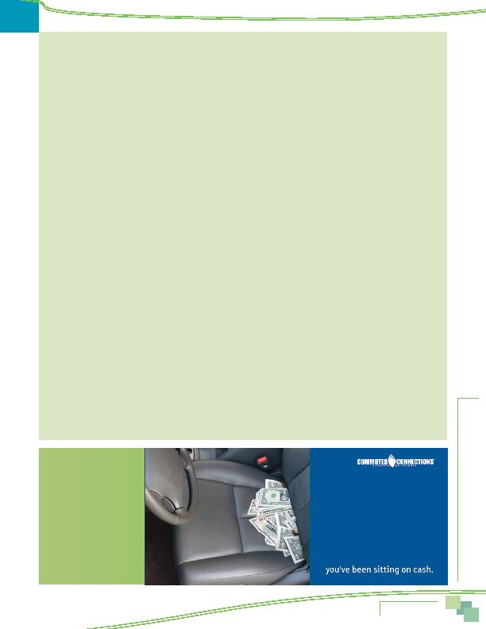

|

would encourage them to seek options for travel to work. The transit connection might be due to higher visibility of the services, but 65% of respondents who contacted a local program said they were seeking transit information. In the inner jurisdictions, transit assistance is provided by transit organizations that are separate from the local commute assistance program. heard, or read advertising for commuting in the six months prior to the survey and 70% of these respondents could cite a specific advertising message. Both the general recall and specific message recall were higher than was observed in the 2007 survey (52% general recall and 65% message recall). could name the sponsor. WMATA was named by 20% as the advertising sponsor. Commuter Connections was named by 13%, a slightly higher percentage than named Commuter Connections in 2007 (9%). advertising said they were more likely to consider ridesharing or public transportation after seeing or hearing the advertising. This was higher than the 18% who noted this willingness in 2007. likely to be influenced by the advertising. Almost half of bus riders, 25% of Metrorail riders, and 30% of carpooolers/ vanpoolers said they were likely to consider alternative modes after hearing the ads, compared with 21% of commuters who drove alone. younger respondents. A third of respondents who were between 25 and 34 years old said they were likely to consider ridesharing compared with only about two in ten consider ridesharing or public transportation for commuting had taken some action to try to change their commute. These respondents cormprised about two percent of all regional commuters. A large majority (83%) of respondents who took an action to change their commute said the advertising they saw or heard encouraged the action. commuting options but five percent tried or started using a bus, train, or bicycling or walking to work. Prior to starting these new modes, half of the respondents had been driving alone to work. The other half had been using a different alternative mode. PROVIDED BY EMPLOYERS or more alternative mode incentives or support services to employees at their worksites. This is slightly higher than 54% noted in the 2007 and the 53% reported in 2004. subsidies (45% of respondents), commute information (26%), services for bikers and walkers (24%) and preferential parking (21%). In all cases, these services were more available in 2010 than they had been in 2007. most likely to have incentive/support services available (89%), compared with 46-64% of respondents who worked for other types of employers. Respondents who worked for large firms reported greater access to incentive/support services than did respondents who worked for small firms. And incentives and support services were far more common among respondents who worked in the Inner Core jurisictions (Alexandria, Arlington, and District of Columbia); 74% of these respondents had access to services compared to 53% of (24%) of respondents who had seen advertising said they were more likely to consider ridesharing or public transportation after seeing or hearing the advertising. |